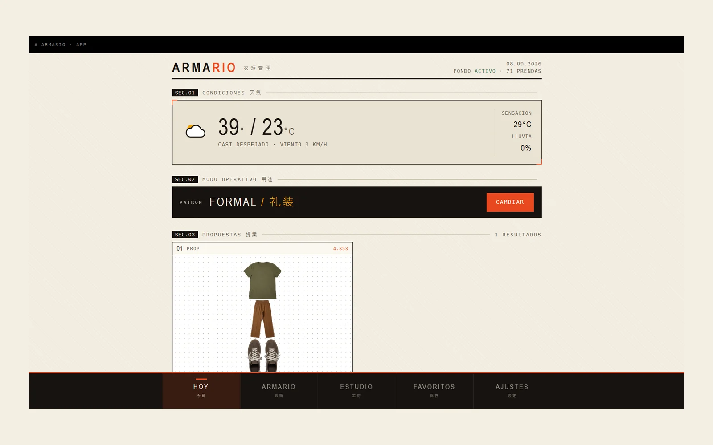

Armario
I own enough clothes to dress well and I still wear the same four things. Armario is a local web app that holds a photographed catalogue of my wardrobe and proposes outfits for the day from the real forecast and the occasion, and unlike almost everything else in this portfolio, it deliberately contains no model at all.
The first version was going to call an LLM with a prompt and a few examples. I threw it away. A deterministic rules engine costs nothing per query, needs no API key, runs on a tablet with no signal, and (the part that actually matters) can explain itself. Every proposal carries the reasons that produced it. A model that says "this looks good together" is not something I can argue with; a score I can read is.
Each garment is scored on six weighted signals: how well its temperature range overlaps today's real forecast from Open-Meteo (×3), how it fits the occasion (×2), whether it fits me and whether I like it (×1.5 each), a star rating, and a penalty that decays over a week if I wore it recently. The outfit score is the mean of its pieces plus a colour-harmony term: neutrals are free, two strong families cost you, three sink the proposal. Anything in the laundry basket is filtered out before scoring, and wearing an outfit throws its pieces in the basket automatically. Watches, belts and shoes are exempt: they don't get washed every time.
Cataloguing is the part I automated hardest, because it's the part that decides whether the project survives. rembg (u2net) cuts the background out of every photo; the dominant colour is inferred from the cut-out's alpha channel and resolved against a 28-colour vocabulary, the same vocabulary the harmony rule speaks, so detection feeds the engine directly. Ten out of ten on synthetic samples. Anything I type by hand always wins.
The detour worth reporting is the camera. I wanted the phone as a webcam so I could shoot garments from across the room: the virtual-camera app showed a perfect live picture in its own window and handed OpenCV nothing but black frames. I stopped fighting drivers and inverted the problem: the phone opens the web app over the LAN and shoots with its own camera, while the PC keeps doing the background removal and the colour. I lost the framing guide; I gained a workflow I'll actually use for fifty garments. Cheap answers beat clever ones when the clever one is a driver.
One FastAPI process serves a four-screen front end written in plain HTML, CSS and JavaScript (no npm, no build step) over SQLite. The same Python runs unchanged on a rooted Android tablet under Termux, which is where it lives day to day. Status: the code is done and the wardrobe isn't. The engine is only as good as the garments and the ratings I feed it, and that part is manual labour no architecture removes.
- Stack
- Python, FastAPI, SQLite, OpenCV, rembg (u2net), Open-Meteo, vanilla JS, Termux
- Status
- In use · wardrobe still being catalogued
- Year
- 2026

Next: Netkey